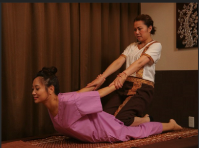
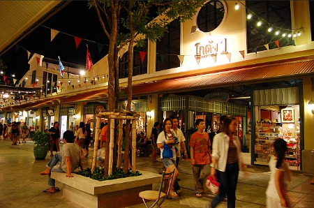

⏰ 8:00 起床 → ホテルの朝食バイキング
🚕 8:30 ホテル出発！
💰 料金：100バーツ
⏳ 所要時間：約1時間30分
📍 出発地：南バスターミナル
🚐 メリット：早く着く、途中で降りられる
⚠ デメリット：座席が狭く、荷物が多いと大変
💰 料金：50〜70バーツ
⏳ 所要時間：約2時間
📍 出発地：南バスターミナル
🚌 メリット：安い、大きな荷物もOK
⚠ デメリット：渋滞の影響を受ける、遅い
💰 料金：20バーツ
⏳ 所要時間：約3時間
📍 出発地：ウォンウィエンヤイ駅
🚂 メリット：のどかな風景を楽しめる
⚠ デメリット：本数が少ない、時間がかかる
💰 料金：約600バーツ
⏳ 所要時間：約1時間
📍 どこからでも乗れる
🚖 メリット：楽チン、ドアツードア
⚠ デメリット：高い、渋滞にハマる
🚂 **電車が市場を通過する瞬間を見よう！**
⏰ 11:10頃 電車通過予定！
🌊 **ボートに乗って本場の水上マーケットを体験！**
⏰ 12:30頃 ボートツアー開始
メークローン市場 & 水上マーケットの後は、伝統のタイ古式マッサージでリフレッシュ！
🕰️ 60分～90分コースがおすすめ！
💰 **料金相場：200～500バーツ**（場所による）
💡 **ポイント：** 本場のタイ古式マッサージは痛気持ちいい！旅の疲れをしっかりとろう！
バンコク最大のナイトマーケット！ショッピングもグルメも楽しもう！
おしゃれな雑貨やタイのお土産が揃う！
川沿いの雰囲気抜群なレストランで贅沢ディナー！
たくさんの民族フード
アジアティークを楽しんだ後、次はどうする？